DinosaursDinosaurios
Where it all begins: bones, ferns and a furious T-Rex. Donde todo empieza: huesos, helechos y un T-Rex furioso.
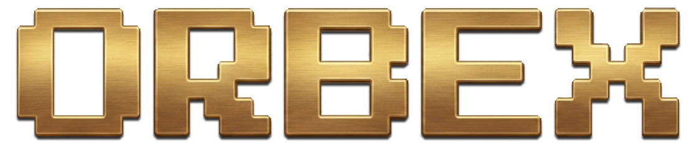
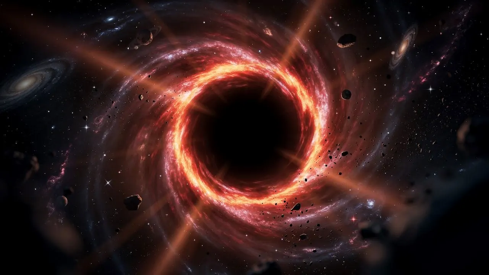
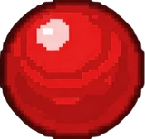
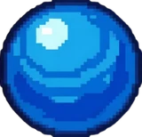
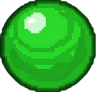
PIXEL MARBLE SHOOTER
Chain, shoot, defeat. 10 worlds. 80 levels. One player against history. Encadena, dispara, derrota. 10 mundos. 80 niveles. Un solo jugador contra la historia.
OUT NOW · FREE ON GOOGLE PLAY YA DISPONIBLE · GRATIS EN GOOGLE PLAY
CLOSED BETA · LAUNCHING SOON BETA CERRADA · SALE PRONTO
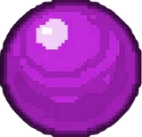
You launch colored orbs from the center and chain combos of 3 or more of the same color on a chain that moves along the path. Drain the boss's health before the chain reaches the end. Lanzas orbes de colores desde el centro y encadenas combos de 3 o más del mismo color en una cadena que avanza por el camino. Vacía la vida del jefe antes de que la cadena llegue al final del recorrido.
No RNG, no paywalls: pure skill. Every boss has its own attack, character and music. Sin azar, sin muros de pago: puro skill. Cada jefe tiene su propio ataque, su personaje y su música.
Easy to pick up in ten seconds. The ceiling is somewhere else entirely. Se entiende en diez segundos. El techo está en otra parte.
A chain of coloured orbs travels along the path. You shoot from the centre; three or more of the same colour burst. Una cadena de orbes de colores avanza por el camino. Disparas desde el centro; tres o más del mismo color revientan.
Simulated demo, running in your browser. It shows the idea, not the game: no real physics and none of the hand-drawn pixel art, which is half of what Orbex is. Demo simulada, corriendo en tu navegador. Enseña la idea, no el juego: sin las físicas reales y sin el pixel art dibujado a mano, que es la mitad de lo que es Orbex.
Hold to aim, release to shoot. The orb you are about to fire is always on screen, so every shot is a decision and never a surprise. Mantén para apuntar y suelta para disparar. El orbe que vas a lanzar está siempre a la vista, así que cada tiro es una decisión y nunca una sorpresa.
Three of the same colour burst. If the gap closes into another match the combo keeps going, and the combo is where the score is: a x5 is worth sixteen times a x2. Tres del mismo color revientan. Si al cerrarse el hueco vuelve a haber tres, el combo sigue — y el combo es donde está la puntuación: un x5 vale dieciséis veces lo que un x2.
Every match hurts the boss of the world. Empty its health before the chain reaches the end of the path — and mind its attacks, because each world's boss has its own. Cada combinación daña al jefe del mundo. Vacía su vida antes de que la cadena llegue al final del recorrido — y esquiva sus ataques, porque el jefe de cada mundo tiene el suyo.
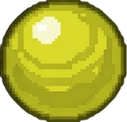
From dinosaurs to deep space. Each world brings 8 levels, a boss with its own attack, and a new playable character. De los dinosaurios al espacio profundo. Cada mundo trae 8 niveles, un jefe con su propio ataque y un personaje jugable nuevo.
Where it all begins: bones, ferns and a furious T-Rex. Donde todo empieza: huesos, helechos y un T-Rex furioso.
Sand, gold and jackal-headed gods. Arena, oro y dioses con cabeza de chacal.
Columns, myths and the titans' thunderbolt. Columnas, mitos y el rayo de los titanes.
Under the sea, a city that shouldn't exist. Bajo el mar, una ciudad que no debería existir.
Castles, dragons and forged steel. Castillos, dragones y acero forjado.
Ice, runes and the wrath of the northern gods. Hielo, runas y la ira de los dioses del norte.
Temples, lanterns and a jade dragon. Templos, farolillos y un dragón de jade.
Cannons, treasure and raging seas. Cañones, tesoros y mares embravecidos.
Neon, concrete and the chaos of the big city. Neón, hormigón y el caos de la gran ciudad.
The final leap: stars, void and a black hole. El último salto: estrellas, vacío y un agujero negro.
Every world ends with a boss — its own attack pattern, its own character, its own soundtrack. Cada mundo culmina con un jefe: su propio ataque, su propio personaje, su propia banda sonora.
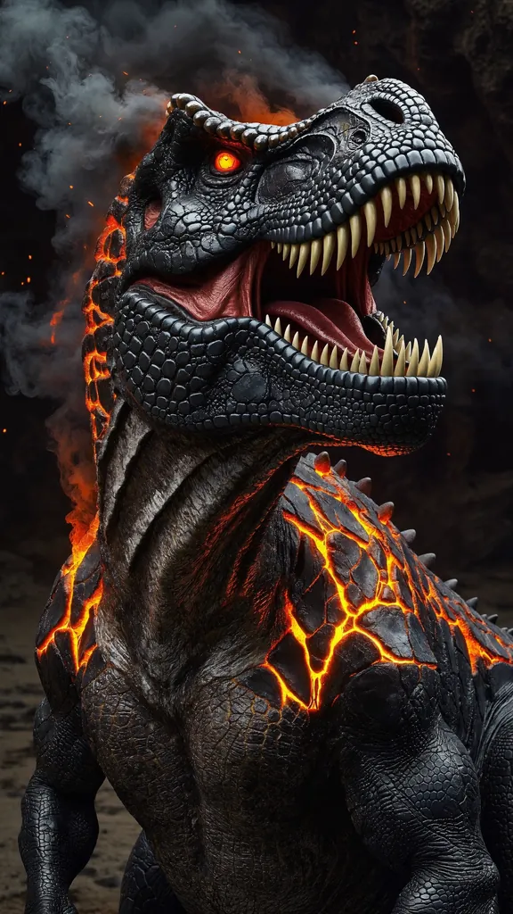
DinosaursDinosaurios
T-REX
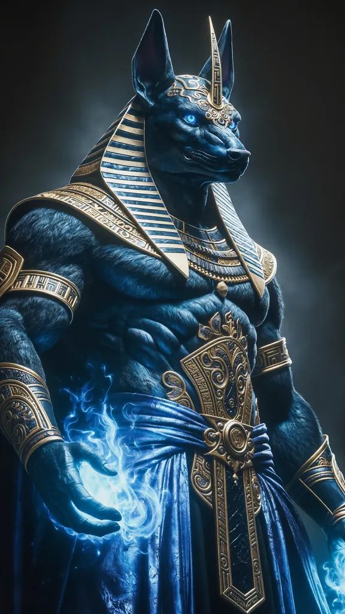
EgyptEgipto
ANUBIS
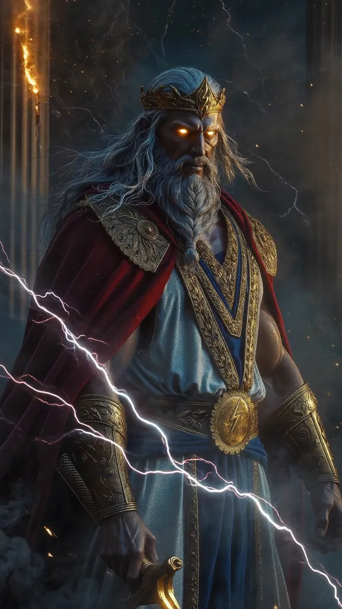
GreeceGrecia
ZEUS
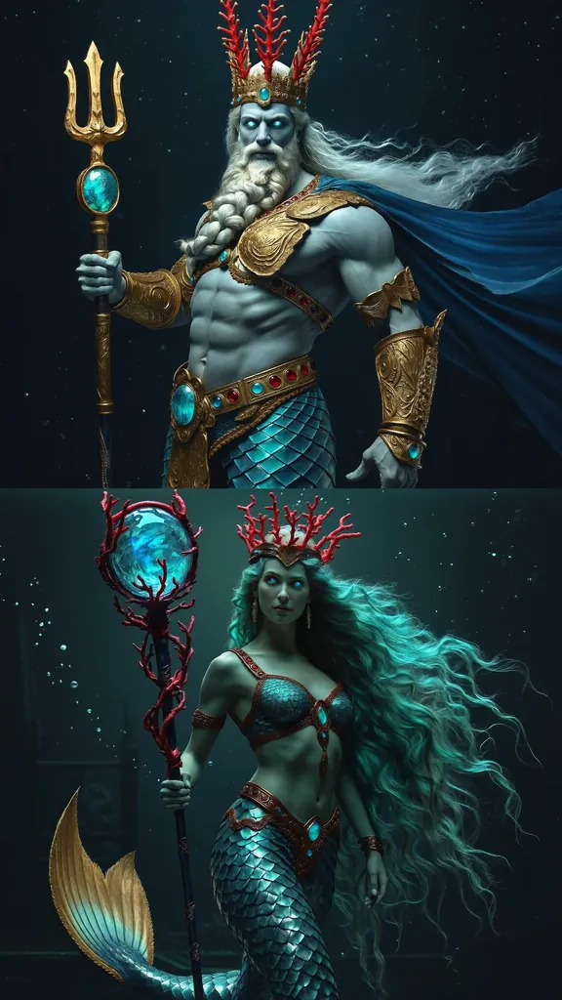
AtlantisAtlantis
POSEIDON & ANFITRITE
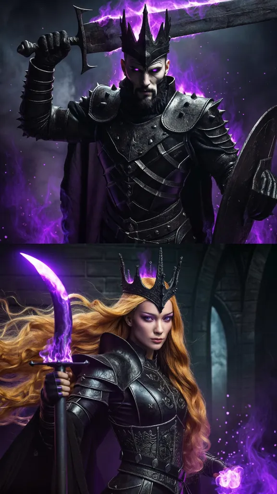
MedievalMedieval
DARGOTH & SELYNA
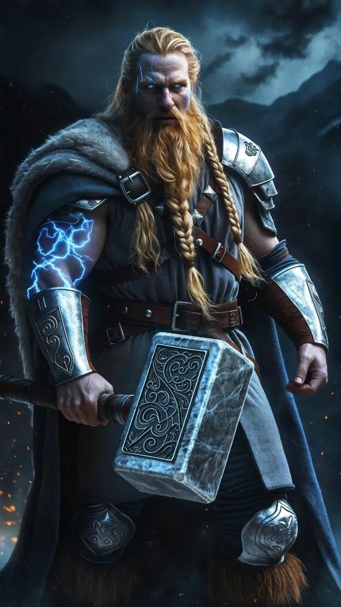
NordicNórdico
THOR
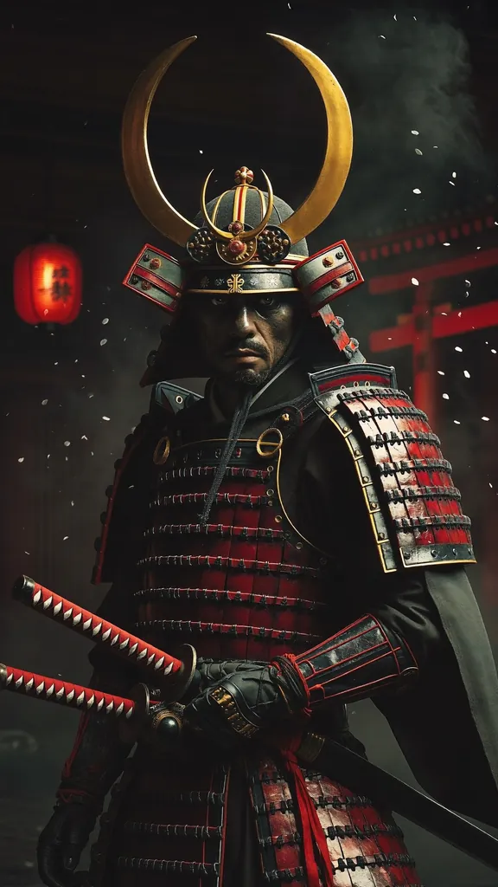
AsianAsiático
KENSHIN
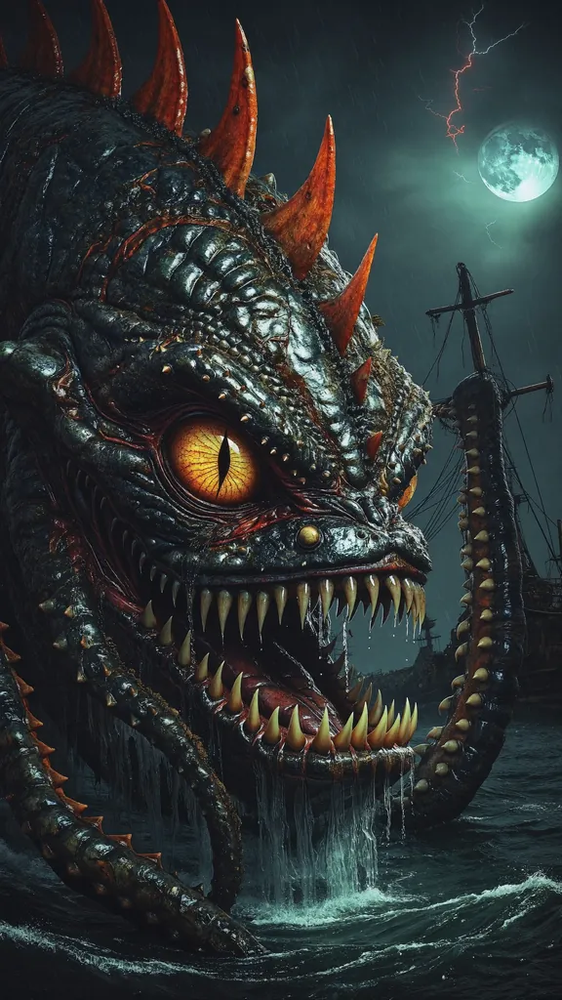
PiratePirata
KRAKEN
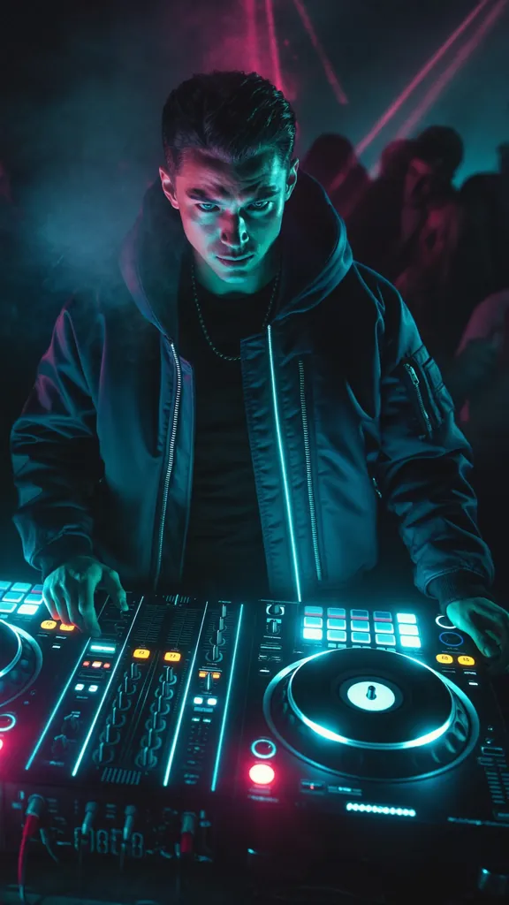
Present DayActualidad
DJ
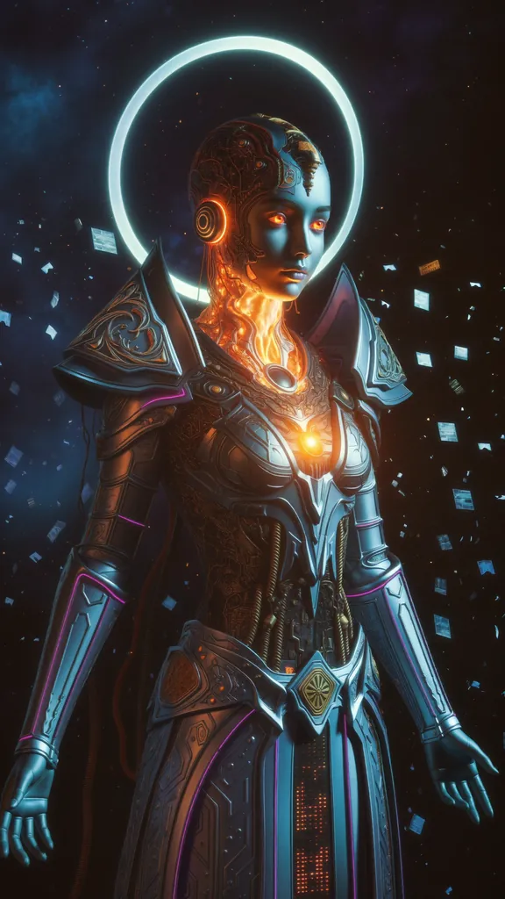
SpaceEspacio
NEXUS-0
80 levels + tutorial and 6 extra boss phases. A challenge that grows with you. 80 niveles + tutorial y 6 fases extra de jefe. Un reto que crece contigo.
Compete for the podium and compare with your friends. Pure skill: no purchase affects your score. Compite por el podio y compárate con tus amigos. Puro skill: ninguna compra afecta tu puntuación.
Freeze, bomb, wildcard, nitro… use skill, not luck. Congelar, bomba, comodín, nitro… usa la habilidad, no el azar.
Over 200 cosmetics: profile avatars, frames, orb skins and menu backgrounds. Más de 200 cosméticos: avatares de perfil, marcos, skins de orbe y fondos de menú.
Come back every day, earn something every day. 7-day streak, free chest, and daily and weekly quests. Entra cada día, gana algo cada día. Racha de 7 días, cofre gratuito y misiones diarias y semanales.
Auto-detects yours on launch. English, Spanish and 8 more. Auto-detecta el tuyo al abrir el juego. Español, English y 8 más.
Any level you have beaten, with no end and no items. How long can you hold out? Cualquier nivel que hayas superado, sin final y sin objetos. ¿Cuánto aguantas?
One level a week, the same for everyone, with its own leaderboard and prizes. Un nivel por semana, el mismo para todos, con su propia tabla y sus premios.
Limited windows with their own currency and cosmetics you can only get there. Ventanas limitadas con su propia divisa y cosméticos que solo se consiguen ahí.
Tap any image to enlarge.Toca cualquier imagen para ampliarla.
Design, code, UI art and level design, all by the same pair of hands, on Godot 4.6. The core is not off-the-shelf: the chain, the insertion, the snap-back and the depth system that lets orbs pass behind an arch are custom code. Diseño, código, arte de UI y level design, todo de las mismas manos, sobre Godot 4.6. El núcleo no viene de una tienda de assets: la cadena, la inserción, el retroceso y el sistema de profundidad que hace que los orbes pasen por detrás de un arco son código propio.
It also ships with its own Godot editor plugin for drawing the level paths, an online leaderboard with the anti-cheat caps on the server, cloud saves with transfer codes between devices, and ten languages that auto-detect on first launch. Trae además su propio plugin de editor de Godot para trazar los caminos de los niveles, ranking online con los topes anti-trampas en el servidor, copia del progreso en la nube con códigos de transferencia entre dispositivos, y diez idiomas que se autodetectan al abrirlo por primera vez.
Curious about the guts? The project is documented in the open — aleixaj.com. ¿Curiosidad por las tripas? El proyecto está documentado en abierto — aleixaj.com.
Orbex is fully translated. It auto-detects your device language on first launch. Orbex está totalmente traducido. Detecta el idioma de tu dispositivo la primera vez que abres el juego.
Yes, free to download. There are optional cosmetic packs and coin packs, and that is the whole of it: nothing you can buy affects your score. The ranking is skill only, which is why power-ups never give points. Sí, la descarga es gratis. Hay packs de cosméticos y de monedas opcionales, y ahí se acaba: nada de lo que se compra afecta a tu puntuación. El ranking es puro skill, y por eso ningún objeto da puntos.
No. The campaign, survival mode and your progress work offline — you can play the whole game on a plane. Only the online ranking, the weekly challenge and the cloud save need a connection. No. La campaña, el modo supervivencia y tu progreso funcionan sin conexión — el juego entero se puede jugar en un avión. Solo el ranking online, el desafío semanal y la copia en la nube necesitan red.
Not yet. Orbex is Android first; the iOS port is on the roadmap and needs Apple hardware to build and test on. Todavía no. Orbex es Android primero; el port a iOS está en el plan y necesita hardware de Apple para compilar y probar.
Android 7.0 or newer, and about 300 MB. It plays in landscape, with one hand, in runs of a couple of minutes. Android 7.0 o superior y unos 300 MB. Se juega en horizontal, con una mano, en partidas de un par de minutos.
From Options → Delete my account, inside the game. It wipes the server side too, and the next launch looks like a fresh install. The privacy policy lists exactly what is stored and why. Desde Opciones → Borrar mi cuenta, dentro del juego. Borra también lo del servidor, y el siguiente arranque parece una instalación nueva. La política de privacidad detalla qué se guarda y por qué.
Free on Google Play. 10 worlds, 80 levels and a boss waiting for you in every era.Gratis en Google Play. 10 mundos, 80 niveles y un jefe esperándote en cada época. Free, on Android. 10 worlds, 80 levels and a boss waiting for you in every era.Gratis, en Android. 10 mundos, 80 niveles y un jefe esperándote en cada época.